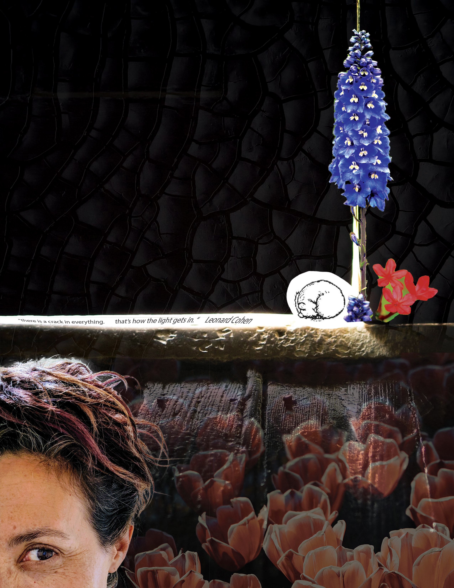
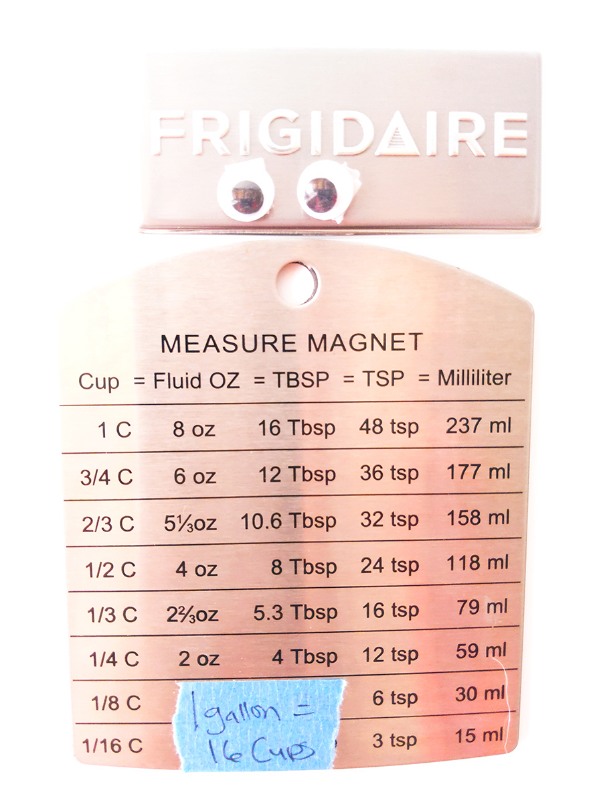

My Projects
University projects focused heavily on learning new software and navigating the tech-heavy environment of remote learning. During these historic times, I learned HTML and CSS code, planned and built a website, recorded a documentary podcast, edited and mixed sound files, organized weekly photoshoots, edited and manipulated digital photographs, and created collages and patterns with Adobe Creative Suite. Check out these projects!
"Cracks of Light" self portrait (march 2021)
"Life In Lockdown" (february 2021)
